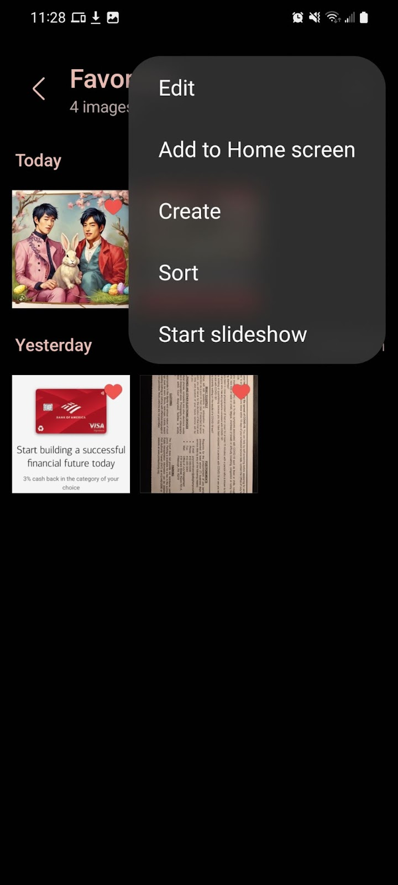
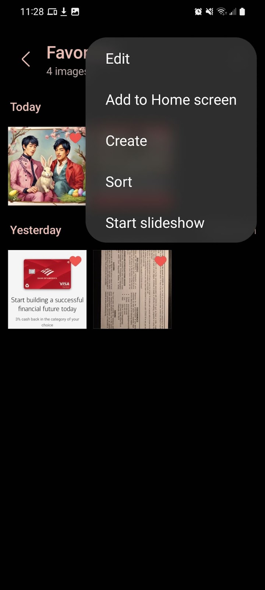

| Google Photos | Samsung Gallery | Apple Photos | |
|---|---|---|---|
| Uses “heart” icon | ❌ | ✅ | ✅ |
| Thumbnail unfavorite toggle | ❌ | ❌ | ❌ |
| Default ordered by date | ✅ | ✅ | ✅ |
| Displays dates | ✅ | ❌ | ❌ |
| Automatic Slideshow feature | ❌ | ✅ | ✅ |
| “Sort by” feature | ❌ | ✅ | ❌ |
| Filter Feature | ❌ | ❌ | ✅ |

 

The favoriting icon for Samsung Gallery and Apple Photos was both a heart, whereas Google Photos utilized a star. The use of a heart seems most intuitive, as the heart symbolizes affection and the emotion of love or satisfaction, most commonly associated with the attraction towards a particular person or object. The use of a heart to signify the button for favoriting a photo is well-suited for the functionality not only in terms of real-world symbolism, but also in terms of common digital usage; the heart is commonly used for buttons representing “like” features on social media apps and websites. The usage of a star in Google Photos seems less adept for the task, as it remains ambiguous as to what a star may represent in a given digital platform. It was not until I read the “Favorites” tab next to the star icon in the menu section that I arrived at the certainty that the star icon represented “favorites” functionality in Google Photos. Additionally, the choice of fill color in the favorited icons between the apps draws contrast in status designation. In Samsung Gallery, the favorited photos fill the heart red, whereas Google Photos and Apple Photos keep the fill white, the same color as the icon outline. The contrast between the fill color in Samsung Gallery helps to enunciate the difference between favorited photos and not favorited photos.
Google Photos and Samsung Gallery include the added labeling of dates above each photo or group of photos taken on the same day, whereas Apple Photos and Samsung Gallery leave this labeling out. This labeling by date seems to enhance context behind the thumbnail photos, as many of the photos are likely taken at vastly differing times in one’s history; the inclusion of the dates adds an extra layer of information to the long list of images and allows the user to draw greater recall to the time the photo(s) were taken. Even the simple addition of a year to a photo taken many years ago may amplify the user’s sense of nostalgia as to what was going on at that particular time in life. The omission of this feature by Apple Photos gives the effect of condensing all the favorited photos into a single list of tiny thumbnails, presenting little contrast to the different photos.